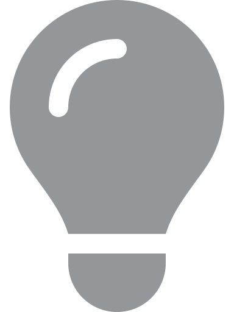

How do I win?
You don't. You just do a little better each time.
How do I start?
See the coloured blocks with numbers in them? The number represents their value and the colour just makes them easier to identify.
Find a block that has other blocks of same value next to it (left, right, above or under) and tap it! Now you will highlight the block and all blocks that are connected to it. (Note: If you tap a block with no valid neighbours, nothing will happen)
Tap any of the highlighted blocks to merge them into a block of higher value at the location where you tapped.
After each turn the board will fill itself up with new blocks, falling down from above.
Blocks and their value
So, if you merge a group of 1-blocks they will turn into a 2-block. If you merge a group of 2-blocks, they will turn into a 3-block. You get the idea. This continues all the way up to 10.
Points
By now you're probably wondering why any of this is important. Well, you want points, don't you?
The higher the value of the block, the more points you will earn when merging it. But this is only half of the equation. Bigger groups of blocks merged at the same time will result in bigger rewards.
Also, the deeper the level the more points will be rewarded.
Bonus blocks
After each merge there is a chance that a block will be turned into a bonus block. The more blocks you merge at the same time, the bigger the chance and bonus will be.
(Note: Only blocks in groups can become bonus blocks, and a block that already has a bonus can not receive more bonuses)
To get the bonus you will have to tap the bonus-block when merging the group. This will result in the entire points being multiplied by the bonus-amount on your block. (2x, 3x or 4x)
Keep in mind that the bonus will only stay for one turn, so if you don't use it, the block returns to its normal value when the turn is over.
Options
Options is the number of available block-groups.
If you have no options once a turn is done, the game is over.
Undo
You start out with 3 undos. If you use one, a new one will be added after 30 turns. You can never have more than 3 at a time.
You can use this to undo a turn and go back one step in history.
Have fun
That was quite a mouthful. Don't worry, most of it will happen automatically, you just need to merge blocks and have fun.